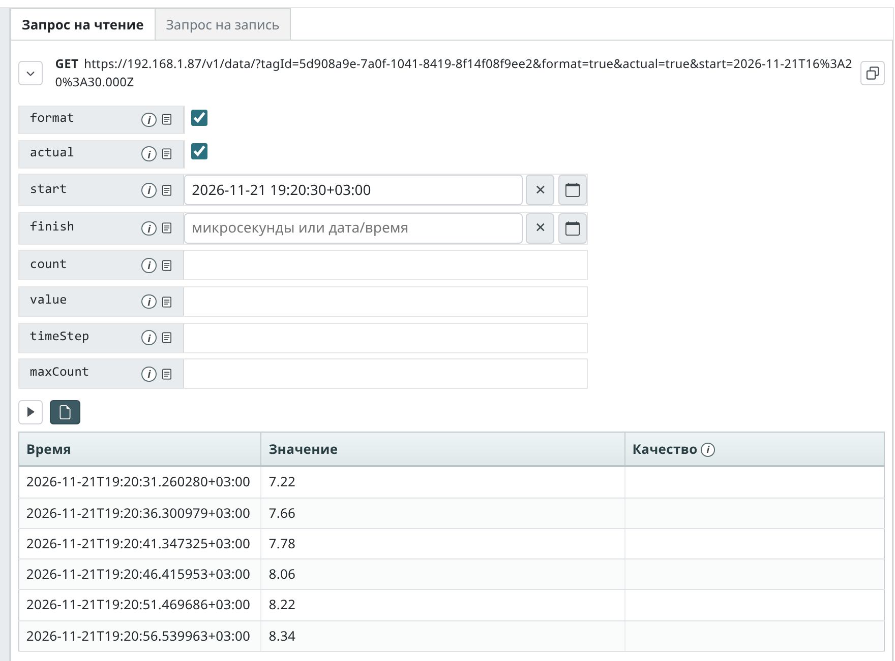

Поставка данных: скрипт-имитатор
- запускать программу, которая сама поставляет данные в модель;
- видеть в Конфигураторе, как модель живёт на этих данных: расчёт и тревога срабатывают без участия человека.
Скрипт-имитатор каждые 5 секунд записывает в «Давление», «Ток» и «Уровень» новые значения. Метод из урока 4 сразу пересчитывает «Мощность», а тревога из урока 5 сама возникает и пропадает вместе с уровнем.
До сих пор значения в теги записывал человек в Конфигураторе. На настоящей станции их приносят приборы и контроллеры: программа-коннектор опрашивает оборудование и записывает показания в теги. Записывает она тем же запросом, которым пользуется сам Конфигуратор, — POST /v1/data/. Любая программа, которая умеет отправлять HTTP-запросы, может поставлять данные в модель.
Приборов у нас нет, поэтому напишем имитатор — короткий скрипт, который выдумывает показания насосной станции и записывает их в платформу.
Скрипт-имитатор
Имитатору хватает Python, который уже есть в Ubuntu Server, — сторонние библиотеки не нужны. Создайте файл на виртуальной машине командой ниже, её можно скопировать целиком:
$ cat > simulator.py <<'EOF'
"""Имитатор насосной станции: записывает давление, ток и уровень в платформу."""
import json
import math
import os
import random
import ssl
import time
import urllib.parse
import urllib.request
API = os.environ.get("PRS_API", "https://localhost/v1")
PERIOD = 5 # секунд между записями
# у платформы самоподписанный сертификат, поэтому проверку отключаем
SSL = ssl.create_default_context()
SSL.check_hostname = False
SSL.verify_mode = ssl.CERT_NONE
def request(method, path, body=None):
data = json.dumps(body).encode() if body is not None else None
req = urllib.request.Request(
API + path, data=data, method=method,
headers={"Content-Type": "application/json"},
)
with urllib.request.urlopen(req, context=SSL) as resp:
return json.loads(resp.read() or "null")
def tag_id(name):
query = {"base": "prs", "scope": 2, "filter": {"cn": [name]}, "attributes": ["cn"]}
found = request("GET", "/tags/?q=" + urllib.parse.quote(json.dumps(query)))["data"]
if not found:
raise SystemExit(f"Тег «{name}» не найден")
return found[0]["id"]
tags = {name: tag_id(name) for name in ("Давление", "Ток", "Уровень")}
print("Теги найдены:", ", ".join(tags), flush=True)
start = time.time()
while True:
t = time.time() - start
values = {
"Давление": round(4.2 + 0.3 * math.sin(t / 40) + random.uniform(-0.05, 0.05), 2),
"Ток": round(12.5 + 2.5 * math.sin(t / 25) + random.uniform(-0.2, 0.2), 1),
"Уровень": round(75 + 20 * math.sin(t / 50), 1),
}
request("POST", "/data/", {"data": [
{"tagId": tags[name], "data": [[value]]} for name, value in values.items()
]})
print(f"давление {values['Давление']} бар, ток {values['Ток']} А, уровень {values['Уровень']} %", flush=True)
time.sleep(PERIOD)
EOFЧто делает скрипт:
- функция
tag_idнаходит тег по имени запросомGET /v1/tags/, поэтому идентификаторы копировать не нужно. В учебной модели у каждого из трёх тегов уникальное имя; - в цикле скрипт придумывает показания: уровень плавно ходит от 55 до 95 % за пять минут, ток — от 10 до 15 А, давление немного колеблется вокруг 4,2 бар;
- все три значения уходят в платформу одним запросом
POST /v1/data/, затем скрипт ждёт 5 секунд.
Тело запроса устроено просто: список тегов, у каждого — идентификатор tagId и список значений data. Если значение — одно число, платформа запишет его с текущей меткой времени, как Конфигуратор при пустом поле «Метка времени».
Как записать значение с меткой времени и кодом качества
Значение можно передать полностью — [метка времени, величина, код качества], например ["2026-11-16T16:00:00+03:00", 4.4, 0]. Метку можно задать и числом микросекунд. Если показание недостоверно, коннектор записывает его с кодом качества, отличным от нуля: так поступит, например, программа, у которой пропала связь с прибором. Коды описаны в справочнике, в разделе «Исторические данные».
Запуск
Проверьте, что исполнитель из урока 4 работает: в его терминале по-прежнему висит строка «Исполнитель подключён к платформе». Если вы его останавливали, запустите снова. В другом терминале запустите имитатор:
$ python3 simulator.pyТеги найдены: Давление, Ток, Уровень
давление 4.23 бар, ток 12.4 А, уровень 75.0 %
давление 4.19 бар, ток 12.8 А, уровень 77.0 %
давление 4.23 бар, ток 13.6 А, уровень 79.0 %А в терминале исполнителя на каждую строку имитатора появляется строка расчёта:
ток 12.4 А -> мощность 6.94 кВт
ток 12.8 А -> мощность 7.16 кВт
ток 13.6 А -> мощность 7.61 кВтМодель ожила: новое значение тока запускает метод, и «Мощность» пересчитывается без участия человека. Остановить имитатор можно клавишами Ctrl+C.
Если имитатор работает не на виртуальной машине
Адрес API скрипт берёт из переменной окружения PRS_API, по умолчанию — https://localhost/v1. Чтобы запустить его на своём компьютере, укажите адрес виртуальной машины: PRS_API=https://192.168.1.87/v1 python3 simulator.py. В Windows переменную задают командой set PRS_API=https://192.168.1.87/v1.
Данные в модели
Дайте имитатору поработать несколько минут. Откройте в Конфигураторе тег «Уровень», вкладку «Хранилище» и прочитайте историю: включите флажок actual и задайте start на полминуты раньше текущего времени. Точки идут каждые 5 секунд, уровень то растёт, то падает. Если задать start раньше, таблица станет длинной: за каждую минуту работы имитатора в ней 12 строк.
Так же прочитайте «Мощность»: её точки стоят на тех же метках времени, что и точки «Тока».

Теперь следите за деревом. Когда уровень поднимается до 90 %, у «Насоса» загорается красный кружок, а в его списке тревог после «Читать данные» появляется «Высокий уровень» в состоянии «Активна, не квитирована». Примерно через минуту уровень опускается, и тревога пропадает. Если её не квитировать, кружок горит, пока оператор не нажмёт «Квитировать». В списке такая тревога видна со снятым флажком fired — в состоянии «Пропала, не квитирована», как в уроке 5.
Проверка
- Имитатор каждые 5 секунд печатает строку с давлением, током и уровнем.
- В истории «Уровня» и «Мощности» точки идут каждые 5 секунд.
- Тревога «Высокий уровень» возникает и пропадает сама, вслед за уровнем, а красный кружок у «Насоса» показывает это в дереве.
Пусть имитатор работает и дальше: в следующем уроке метод по расписанию будет подводить итоги по его данным.